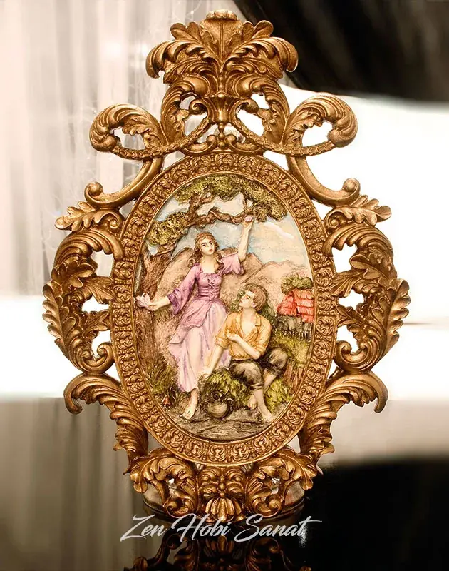
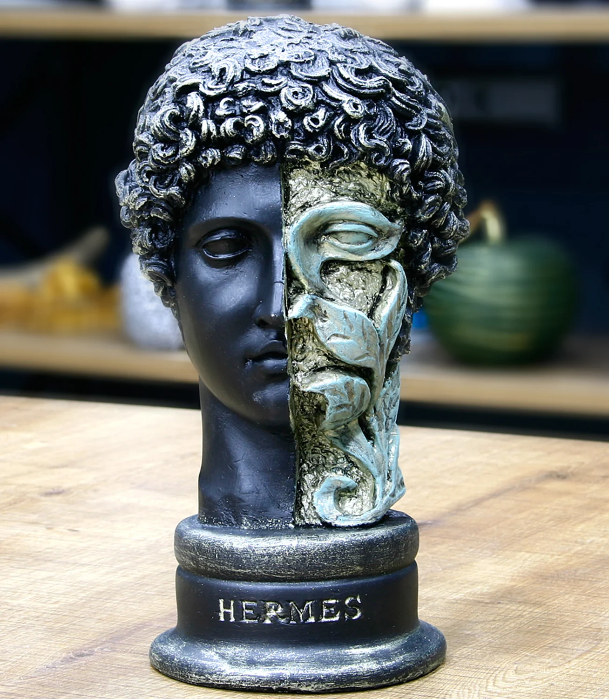
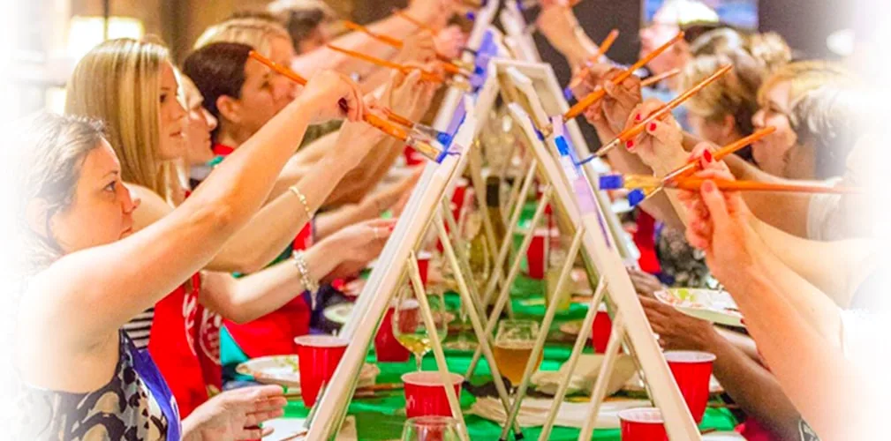
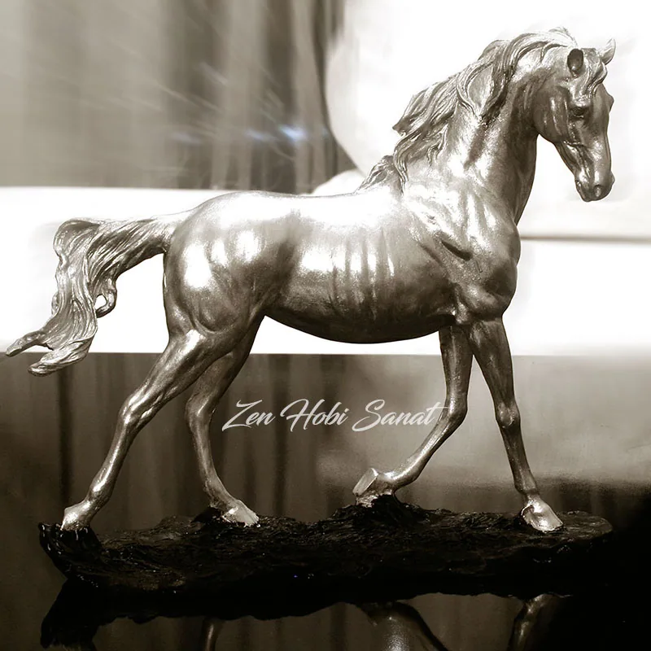
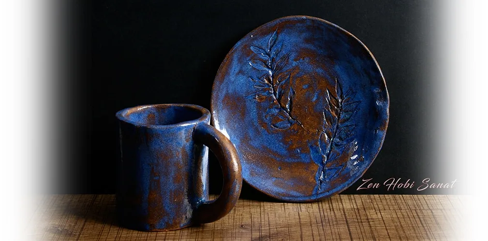
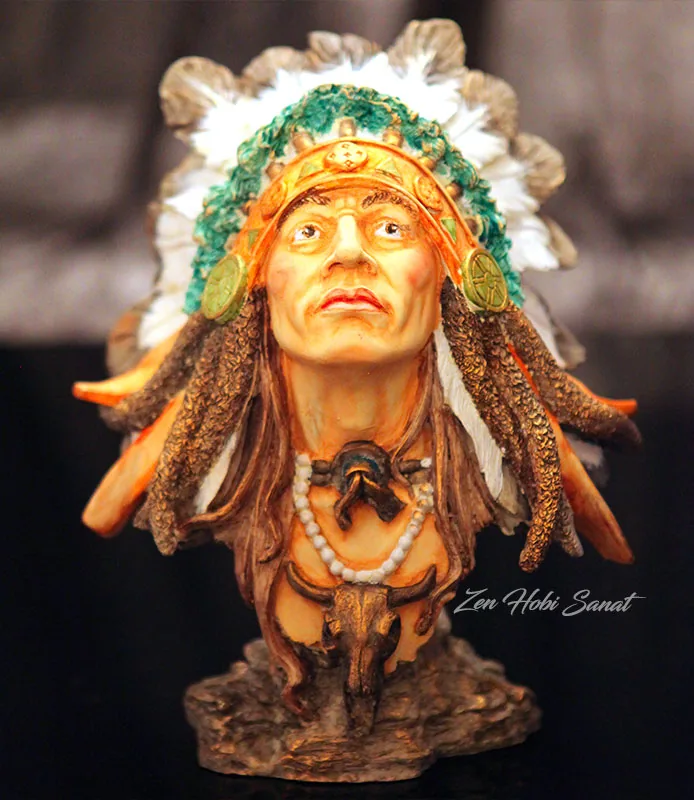

Yaratıcı Çocuk Atölyesi
Seramik, resim ve heykel üçü bir arada temel sanat eğitimi. Çocukların hayal gücünü besleyen, eğlenceli ve üretken atölye saatleri.
İnceleSeramikten resme, heykelden pouring art'a… yetişkinler ve çocuklar için keyifle öğrenip üretebileceğin sıcak bir atölye. Şehrin temposundan, çamurun huzuruna.
Zen Hobi Sanat; şehrin temposundan uzaklaşıp kendi ellerinizle bir şey üretmenin huzurunu yaşamanız için kuruldu. Bahçeşehir'deki atölyemizde profesyonel eğitmenler eşliğinde hem öğreniyor hem de iyi vakit geçiriyorsunuz.
Burada üretmek, bir tür terapidir. Çamuru, boyayı ve sabrı birer araç gibi kullanıp zihninizi yavaşlatırsınız.
El emeğine odaklanmak — kaygıyı azaltan, sizi “şimdi”de tutan ve içinizdeki yaratıcılığı serbest bırakan gerçek bir moladır. Çoğu kişi buraya bir hobi için gelir; kendine iyi gelen bir ritüelle ayrılır. Üstelik çocuk atölyelerimiz uzman bir nöropsikolog eşliğinde planlanır.
Her biri ayrı bir dünya. İster tek bir dala odaklanın, ister hepsini deneyin — başlangıçtan ileri düzeye kadar yanınızdayız.
Seramik, resim ve heykel üçü bir arada temel sanat eğitimi. Çocukların hayal gücünü besleyen, eğlenceli ve üretken atölye saatleri.
İnceleElle şekillendirme, sırlama ve fırınlama… Yetişkinler için keyifle öğrenip üreteceğiniz, esnek programlı seramik atölyesi. Kendi kupanızı, kâsenizi, vazonuzu sıfırdan üretin.
İnceleAkrilik boyayla sıfırdan kendi tablonuzu ortaya çıkarın. Yetişkinler için keyifli, adım adım ilerleyen bir resim atölyesi.
İncele



Ahşap, seramik ve cam üzerine dekoratif boyama, eskitme ve desen teknikleriyle objelerinize ruh katın.
İncele
Arkadaş grupları, doğum günleri ve özel günler için tek seanslık keyifli atölye deneyimleri.
İnceleAkışkan boyaların büyüleyici dansı… Boyayı dökerek, eğerek kendi eşsiz soyut tablonuzu ortaya çıkarın. Tahmin edilemez, keyifli ve rahatlatıcı.
İnceleElle biçimlendirme, şekillendirme, sırlama ve fırınlama. Kendi kupanızı, kâsenizi, vazonuzu sıfırdan üretin.
İnceleTelefonların, ekranların ve yoğunluğun arasında kendiniz ya da çocuğunuz için ayıracağınız gerçek bir zaman. Üretmenin terapötik gücünü birlikte keşfedin.
Çamuru şekillendirmek, boyayla oynamak zihni sakinleştirir.
Alanında uzman, sabırlı ve destekleyici bir ekip.
Kendinizi evinizde gibi hissedeceğiniz bir mekân.
Yaptığınız her parçayı evinize götürürsünüz.






← Sürükleyin · kaydırın →
İlk dersinizde bile elinizden bir eser çıkar. Kursiyerlerimizin çoğu sıfırdan başlar — yetenek değil, keyif yeter.
Telefonu ve günün yükünü bırakıp tek bir işe akmak… Atölyede geçen saat, zihne gerçek bir mola verir.
Çamur, boya, fırça, önlük… her şey atölyede hazır. Yaptığınız her parça da fırınlamanın ardından sizinle eve gider.
Şirket etkinlikleri, takım motivasyonu, doğum günleri ve özel kutlamalar için size özel seramik ve resim workshop'ları düzenliyoruz.
Kesinlikle! Atölyemizdeki kursiyerlerin çoğu sıfırdan başlıyor. Eğitmenlerimiz her adımda yanınızda; ilk dersinizde bile elinizden bir eser çıkacak.
Hayır. Çamur, boya, fırça, önlük ve tüm gerekli malzemeler atölyede hazır. Siz sadece rahat bir kıyafetle gelin.
Evet. Seramik eserleriniz fırınlama ve sırlama sürecinin ardından, resim ve heykel çalışmalarınız ise ders sonunda sizinle eve gider.
Çocuk sanat atölyemiz 4 yaş ve üzeri için uygundur. Yaş gruplarına göre ayrılmış, güvenli ve eğlenceli atölye saatleri sunuyoruz.
Haftanın her günü, sabah ve akşam seçenekleriyle esnek seanslarımız var. Kontenjan sınırlı olduğundan WhatsApp ya da telefonla önceden yer ayırtmanızı öneririz.
Yeni eserler, açılan kontenjanlar ve workshop duyuruları önce Instagram'da. Atölyenin gündelik hâline en yakın yer — gelin, oradan da tanışalım.
Instagram'da Takip Et